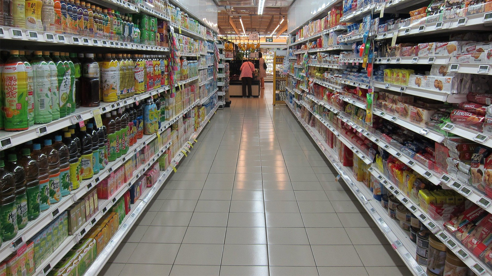

Siga essas dicas simples para diminuir as chances de contrair a covid-19
Ao fazer as compras vá fora dos horários de pico, sempre leve sua máscara e álcool em gel. Se você fizer parte de algum grupo de risco use uma máscara médica. Mantenha no mínimo um metro e meio de distância de outras pessoas e faça uma lista para não demorar muito ao fazer as compras. Ao chegar em casa lave as embalagens com um pano úmido com água e sabão ou detergente. As sacolas devem ser descartadas.
Se tiver sentido algum sintoma da covid-19 procure um médico ou hospital.